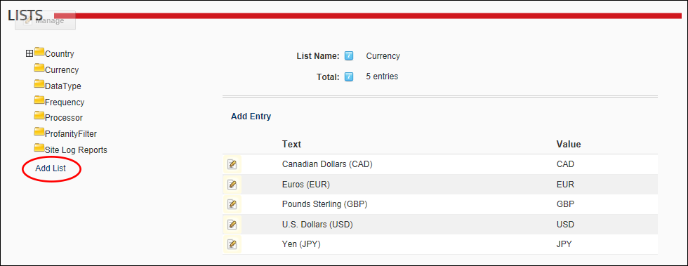
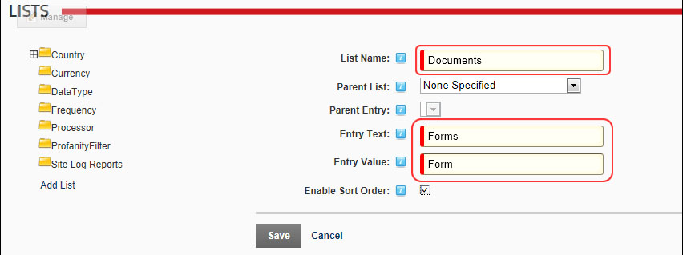
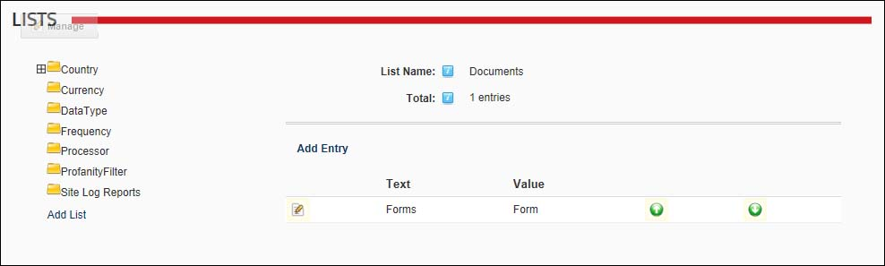

Adding a Parent List
How to add a parent list that will be available to all sites using the Host Lists module. This tutorial shows how to add a Category list that can be used for the Documents module.
- Navigate to Host >
 Lists.
Lists.
- Click the Add List link.

- In the List Name text box, enter a name for the list. E.g. Documents
- At Parent List, leave this field set to None Specified.
- In the Entry Text text box, enter the first entry (item) that will be in this list. E.g. Forms
- In the Entry Value text box, enter the identifier or code for the first entry. E.g. FM or Form. Note: When creating a categories list for the Documents module, the Entry Value is displayed as the category name.
- Optional. At Enable Sort Order, select from these options:
- if you want to be able to reorder the entries in this list.
- to use alphabetical sort order for list entries.

- Click the Save link.
- The newly added parent list is now displayed, enabling you to commence adding list entries to this list.
